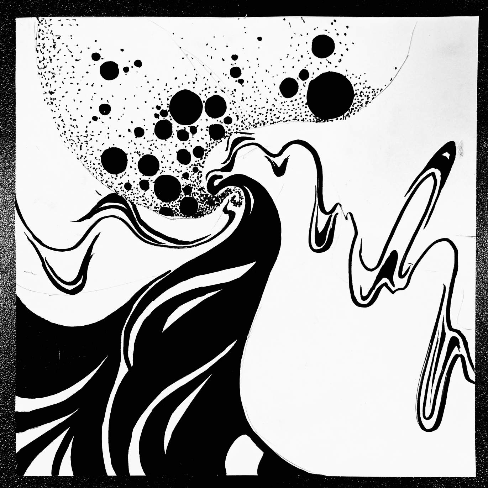

构成设计：色彩构成

色彩构成设计
作品介绍
《色彩构成》是我的构成设计课程作业，通过对色彩理论的实践应用，探索不同色彩组合在视觉上产生的心理效应和情感表达。
设计思路
本作品以"色彩的和谐与对比"为主题，采用了蒙德里安风格的几何分割作为基础框架，通过不同色相、明度和饱和度的色彩组合，创造出丰富多变的视觉效果。设计过程中注重色彩的平衡与节奏，使整体画面既充满活力又和谐统一。
技术要点
使用Adobe Photoshop进行色彩实验和组合，通过精确的色彩搭配和比例控制，展现色彩的视觉张力。作品中运用了色彩三要素（色相、明度、饱和度）的变化规律，以及互补色、类似色等色彩关系的理论知识。
学习收获
通过这个项目，我深入理解了色彩理论的基本原理和应用方法，学会了如何通过色彩来传递情感和信息。同时，也提高了对色彩搭配的敏感度和审美能力，为后续的设计工作打下了坚实的基础。